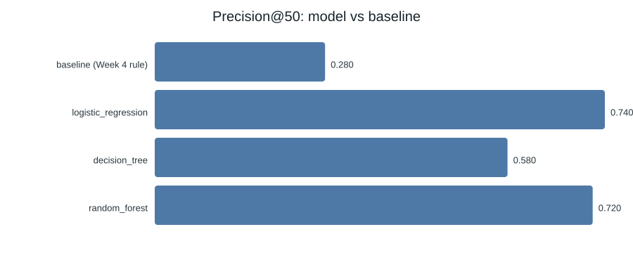
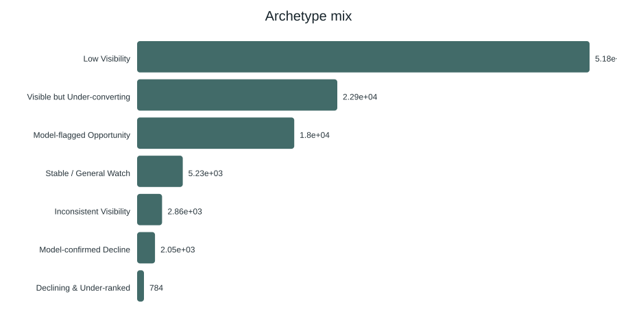
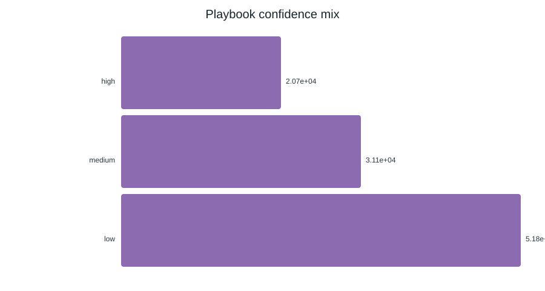

FlyRank ML Internship · Capstone
AbstractProblemDataMethodologyResultsLimitationsRecommendationsReproducibilityCredit
Abstract. Which of a content team's pages should a human review first, before they quietly lose search traffic? I built a modelling table of 103,691 pages across 42 clients from the FlyRank warehouse release — a 90-day behaviour window and a label that flags a ≥30% search-impression drop in the following month, with every label-derived column removed. Three sklearn models were scored as rankers against a transparent hand-rule baseline, all on a client-grouped holdout (no client on both sides of the split). Logistic regression reaches Precision@50 = 0.74 versus the baseline's 0.28 — a 2.6× lift at a realistic weekly review batch size, against a test base rate of 0.301. The output is a ranked, reason-coded review queue for editors: decision-support for a human, never an automated action.
A FlyRank content editor has a fixed number of hours each week and tens of thousands of client pages. Some are slowly losing impressions in Google Search; most are fine. The decision this work supports is narrow and concrete: which pages go to the top of the review queue.
The unit is one page for one client. The output is a ranked list where each row carries reason codes (why it's here) and a suggested lane — refresh, review, or monitor. A wrong call is a prioritisation cost: a false positive burns a review slot on a healthy page; a false negative lets a real decline run another week unseen. Nothing here edits or unpublishes content.
Why model it at all? A transparent rule already sorts the pages (the Week-4 baseline below). A model earns its place only if it puts better pages at the top of the same queue, measured on the same data. It does — by about 2.6× — and Section 4 shows the honest table.
Source. The FlyRank ML Internship warehouse release
(hf://datasets/FlyRank/internship-warehouse), aggregated with the
DuckDB-over-Hugging-Face workflow from the starter's notebook 03 and
work/scripts/build_dataset.py. One row per
(client_hash_id, content_hash_id) pair.
Windows. A 90-day feature window (Jan–Mar 2026 in this build); the label window is the following 30 days (April 2026). Build size: 103,691 rows, 42 clients.
What I excluded, and why. This list is the direct output of the leakage hunt (ML-04 / ML-05), re-verified on the final feature set:
| Excluded column | Reason |
|---|---|
impressions_mar | numerator of the label formula — direct leakage |
impressions_apr | the label window itself — direct leakage |
pct_change | computed from the two above — direct leakage |
trend_direction | derived from pct_change — direct leakage |
trend_pct | percentage form of pct_change — direct leakage |
client_hash_id / content_hash_id | pseudonymous IDs — grouping and splitting only, never a feature |
Public-safe by construction. The hash IDs have no reversible link to
real client names, domains, URLs, page titles, or search queries anywhere in the dataset.
No client-identifying value appears in this paper or the repo's work/ folder.
is_declining_label = 1 when GSC impressions dropped ≥30% from the end of
the feature window into the 30-day label window. Built strictly from the label window; a
measurable proxy for "worth an editorial look", not a content-quality verdict.
impressions_90d, clicks_90d, ctr_90d,
avg_position_90d, sessions_90d, pageviews_90d,
engaged_sessions_90d, organic_sessions_90d,
impressions_last30, impressions_first60,
momentum_pct, active_days_90d, has_ga4_data,
has_momentum. Structural-missing flags (has_ga4_data,
has_momentum) are treated as "not measured", not zero — has_momentum
== 0 rows get a neutral risk score in the baseline, not a "safe" one.
A hand-written score with no fitted weights:
visibility_score × risk_composite. Visibility (percentile rank of
log1p(impressions_90d)) gates the score — an invisible page scores
near zero however bad its other numbers. The risk composite is a 0.45 / 0.30 / 0.25 blend
of in-window momentum, rank position, and visibility consistency, with six plain reason
codes.
avg_position_90d and active_days_90d run opposite
to the rule's assumption, and momentum_pct alone tests as no
effect. Most of the baseline's modest lift comes from the visibility gate, not
from the risk signals being well-aimed. That is exactly what the model is asked to beat.Logistic regression (scaled, balanced), decision tree (max_depth=5), random
forest (n_estimators=200, balanced). RANDOM_STATE = 42. Each is
scored as a ranker via predict_proba.
Client-grouped 80/20 holdout. ~20% of clients (8 of 42) are held out entirely — never rows. Verified train/test client overlap = 0. A row-random split lets a client sit on both sides and the model memorises the client, not the signal; Section 4 shows how much that split would have flattered the numbers.
Direct excluded-column scan of the scoring code, a >0.8 label-correlation check on
every feature (top correlation: active_days_90d at 0.18 — nothing suspicious),
and a split-level client-overlap check. Run in ML-05, re-run on the final feature set in
ML-09.
Model versus baseline, same client-grouped split, same metric. Test base rate (declining share) = 0.301.
| Model | P@10 | P@25 | P@50 | Avg Prec | ROC AUC |
|---|---|---|---|---|---|
| baseline (Week-4 rule) | 0.40 | 0.28 | 0.28 | 0.290 | 0.500 |
| logistic_regression | 0.50 | 0.60 | 0.74 | 0.419 | 0.629 |
| decision_tree | 0.70 | 0.60 | 0.58 | 0.394 | 0.640 |
| random_forest | 1.00 | 0.88 | 0.72 | 0.407 | 0.643 |

Headline: logistic regression reaches Precision@50 = 0.74, a 2.64× lift over the baseline. All three models beat the baseline on every metric. Random forest actually leads at the very top of the queue (P@10 = 1.00); logistic regression is the operating model because P@50 matches a realistic batch and it is the most inspectable.
Re-running everything on a naive row-random split (38 clients overlapping train/test) inflates Average Precision and ROC AUC across the board (LR AvgPrec 0.54 vs 0.42) and lifts random forest's P@50 from 0.72 to 0.82. The client-grouped numbers above are the conservative ones; the model-beats-baseline ordering holds on both splits.
active_days_90d, ctr_90d,
and clicks_90d — behavioural consistency and engagement, not raw impression
count.avg_position_90d ≈ 6–13,
accuracy ~0.48) — consistent with rank running backwards from intuition here.momentum_pct ≈ 6750) is rated 0.80 risk but did not decline. Spike-driven
momentum is a known weak spot.has_ga4_data flag test
found a higher decline rate without GA4 (44.2% vs 35.3%), but a per-client breakdown
traced the gap to one outlier client — so the flag is kept as structural metadata and
excluded as a raw signal, not trusted.The action queue an editor opens tomorrow (from
work/outputs/content_action_playbook.csv), 103,691 pages scored into seven
archetypes:


Each tier ships with a human-review checklist and a no-go list: never auto-publish, auto-delete, or auto-rewrite from this queue; never treat the score as proof an edit recovers traffic; never use it for personnel, vendor, or budget decisions.
Notebooks: work/notebooks/
(w01 → capstone, run in order). Full write-up:
work/capstone_report.md.
git clone https://github.com/ALVCORHID/Internship.git
cd Internship
pip install -r requirements.txt
pip install duckdb huggingface_hub
export HF_TOKEN=... # request dataset access first
python work/scripts/build_dataset.py # writes work/outputs/dataset.csv
jupyter nbconvert --to notebook --execute --inplace work/notebooks/*.ipynbSeeds: RANDOM_STATE = 42 everywhere. Environment:
requirements.txt + Python 3.11/3.12. Random-forest Precision@50 is
library-version sensitive (±0.03); the ~2.6× lift over baseline is the stable claim.
Committed run receipts: work/outputs/playbook_summary.json,
work/outputs/monitoring_snapshot.json (large CSVs are gitignored and
regenerate on every run).
Built on the FlyRank ML Internship dataset —
flyrank.ai. Crediting the data source is standard research
practice and tells the reader this is real search data, not a toy set. Track leads: Mirza
Ašćerić (ML), Hole (data engineering). Code under MIT; data under the internship's
DATA_USE.md.